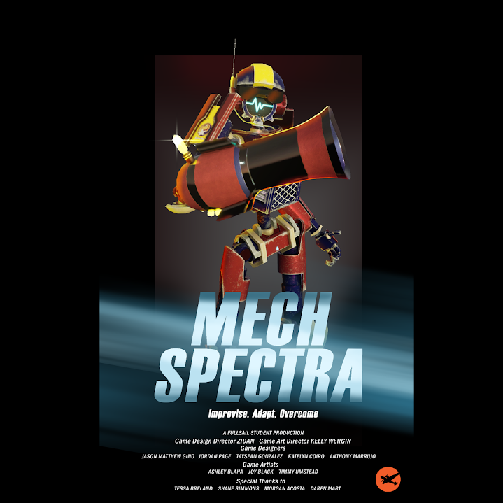
Originally developed as part of a team with 2 months to spend, this project highlights my ability to work within a collaborative environment while contributing to the design and implementation of scalable, modular systems. It demonstrates experience building interactive interfaces that respond dynamically to user input and structuring features in a way that supports maintainability and future development expansion. The project also reflects strong problem-solving skills, attention to user experience, and the ability to iterate on designs based on feedback.
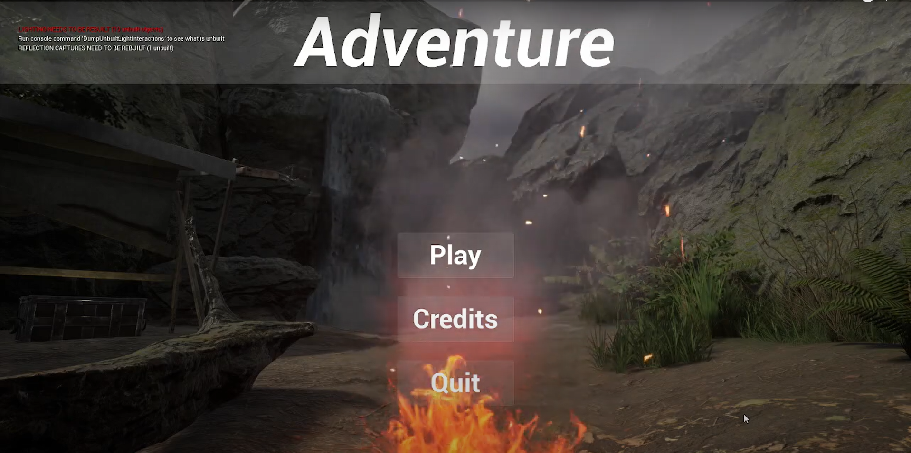
This project was developed over two months period with a main focus on structured environment development with aspects of collaborative design while using minimal interactive elements such as objects and UI. During the first month, I planned the environment through documentaion and real-world visual references before blocking out the environment. In the second month, I refined the layouts, implemented detailed assets, and expanded the environment while integrating my work with peers, requiring consitent designs and seamless transitions. This project demonstrates skills in collabortion, planning, and the ablity to adapt one's work into a unified experience with others.
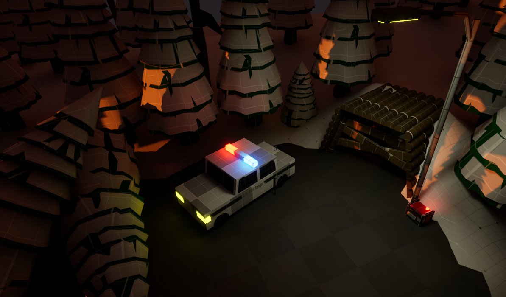
Developed as a solo project, this project centers on object interaction, user-driven exploration, and objective completion similar to the Mech Spectra project. It demonstrates my ability to manage a full development lifecycle while implementing interactive interfaces and a structured environment designed to guide player engagement. This project also contains feedback based on user performance that allows for future expandability and maintained-support while showcasaing problem-solving skills and time management.
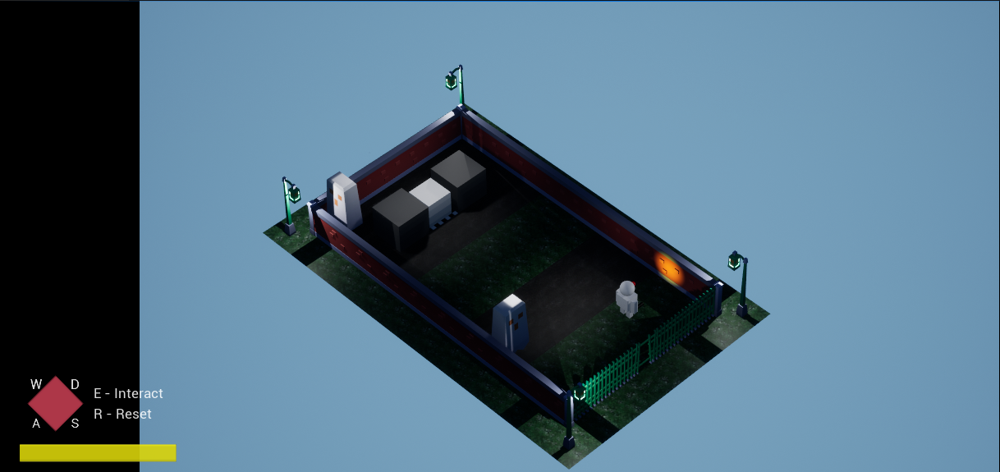
A small project featuring a grid-based movement system with the focus being on designing and implementing unique player mechanics that flow well within the limited movement. To ensure that all interactions and behaviors with the system and the user aligned with the constraints of the grid, thoughtful system design and logic planning were required. The project shows my ability to create adaptble mechanics, maintain consistency across interactions, and solve desing challengs within a specific framework.
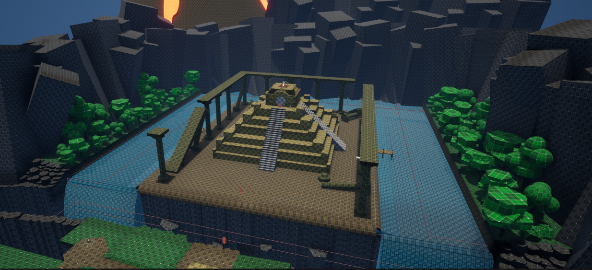
This project was developed as a continuation of the previous Adventure project. Unlike the first Adventure, this project was built in 3 weeks with minimal pre-production. I desgined and implemented laser and mirror mechanics using lince traces to detect collisions and dynamically reflect laser beams based on mirror orientation.
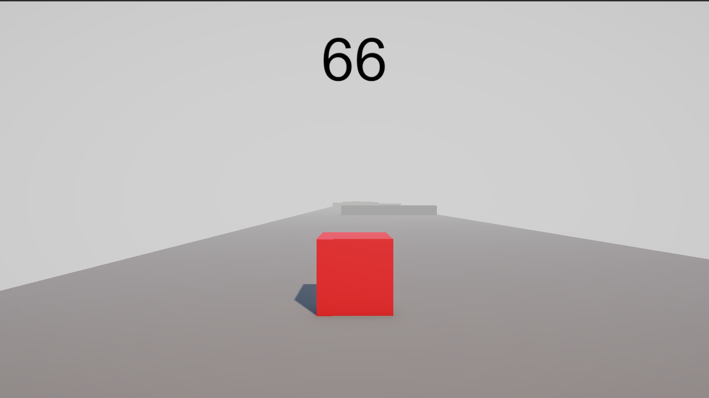
This small project focused on developing a third-person experience centered around the objective of getting past the obstacles. Using Unity and C#, I implemented player functionality, a player-facing UI system, and an environment to support engagement. After feedback, I refined the UI, increased obstacles in the level design, and optimized player mechanics to enhance player movement.
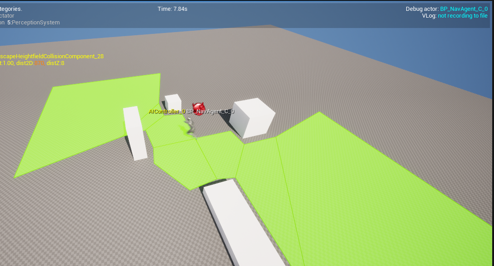
As a precursor to Project Sneaky, I implemented AI agents that can navigated through a predefined array of target points in a specified sequence. I also added collision handling between agents to ensure a smooth avoidance behavior which allows them to move around one another instead of becoming stuck on one another. The goal of this project was to demonstrate custom pathing logic and control over movement systems without the use of Behaviors Trees and Blackboards.
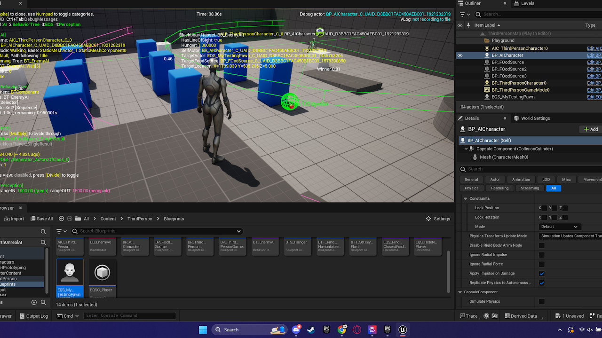
This AI system was developed using Unreal Engine's Behavior Trees which allowed for state-driven behavior based on conditions and timers. With conditional logic and state management, the agent automatically patrols a specified area until a timed condition a "hunger" state, prompting it to navigate to a designated resource location to "eat". The system also responds to user interaction. When the player approaches and establishes visibility with the agent, the AI changes to a more defensive state, seeking cover behind nearby objects.
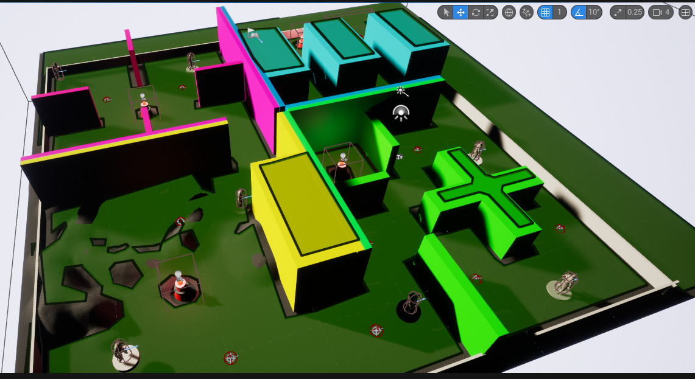
A point-and-click stealth-basaed interactive experience featuring four sections that users are able to navigate by clicking with their mouse. The project includes state management and AI entities that patrol defined areas and respond dynamically to user presence through line-of-sight detection and chase behavior. If the player is detected, the system transitions AI's state to pursue the player until the AI loses visibility. The player's objective is to successfully progress through all four sections without being caught.
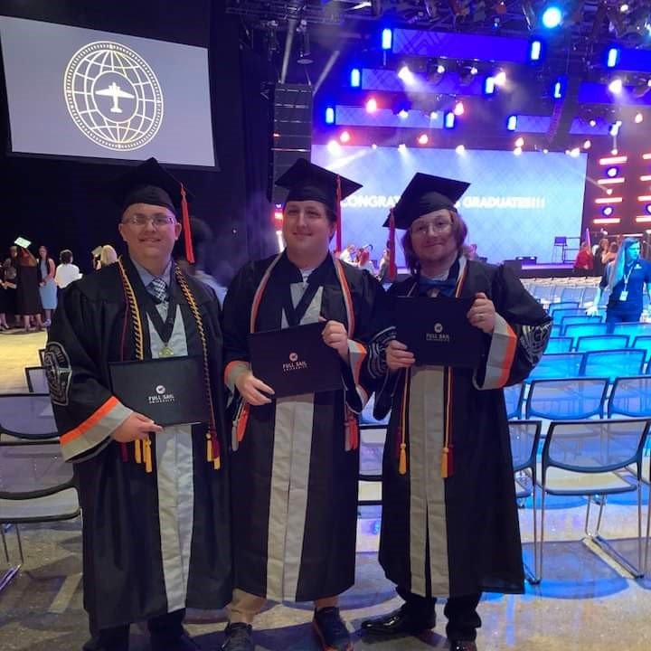
My name is Jordan Page. I was born and raised in Mississippi, and I am the oldest of three children. I graduated from Full Sail University in 2024 with a Bachelor of Science in Game Design. My favorite topics are technology, game development, game design, and video games. In my free time, I am often spending time with friends and family, teaching myself a new development-related skills, or playing video games. My favorite classes from college were ones that focused around designing 3D structured environments as well as designing and implementing custom user interfaces. I am a capable and quick learner with a varying degree of technological skills. I am also a great collaborator and a very capable solo worker. Although I consider myself knowledge of a lot of things, I am not afraid to ask questions from peers and others, so that I can improve my work and gain more knowledge.
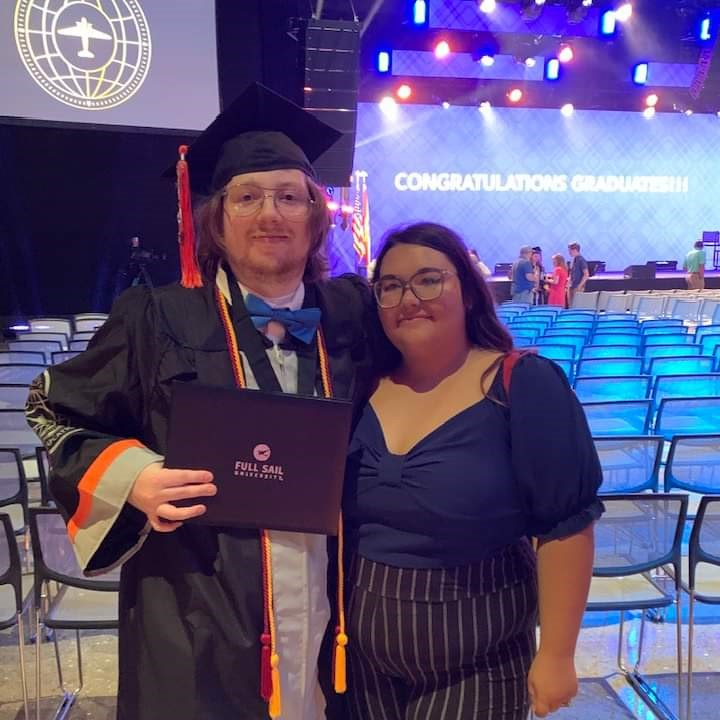